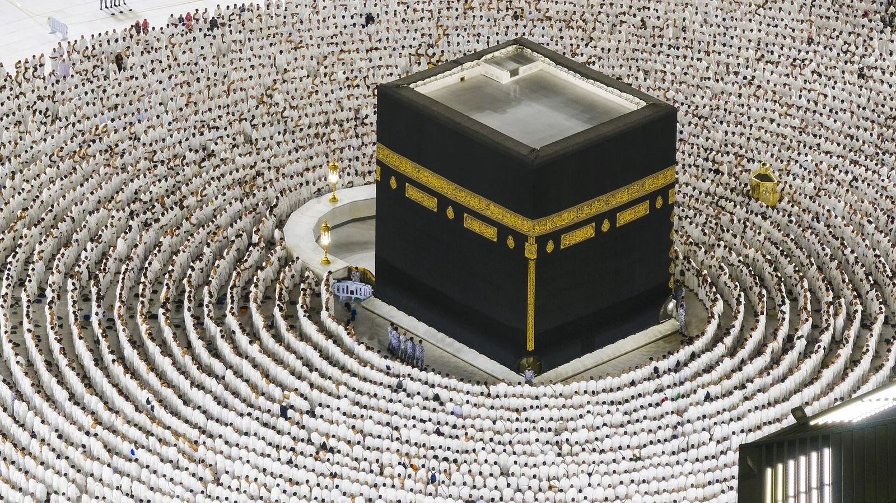

Kenapa Haji Khusus Memiliki Estimasi Waktu Lebih Singkat?
Penjelasan berbasis regulasi mengenai sistem kuota resmi, angka pendaftar, dan cara menghitung usia ideal Anda saat mendaftar.

Pertanyaan ini sering muncul dalam sesi konsultasi keluarga: bagaimana bisa masa tunggu haji khusus hanya berkisar 5 sampai 9 tahun, sementara antrean haji reguler di banyak provinsi telah melewati angka 30 tahun? Apakah ada jalur pintas? Apakah biayanya yang lebih tinggi otomatis membeli prioritas keberangkatan?
Jawabannya jauh lebih rapi dan legal dibanding kesan sepintas. Selisih waktu tersebut sepenuhnya lahir dari sebuah aritmetika kuota yang ditata oleh undang-undang, bukan dari mekanisme penyerobotan atau prioritas berbayar. Artikel ini membedah angka-angka dan pasal-pasal di baliknya, agar Anda dapat menghitung sendiri kapan usia yang paling ideal untuk mendaftar.
1Dua Jalur, Satu Payung Regulasi
Seluruh penyelenggaraan haji Indonesia berjalan di bawah Undang-Undang Nomor 8 Tahun 2019 tentang Penyelenggaraan Ibadah Haji dan Umrah. Undang-undang ini menetapkan dua jalur resmi keberangkatan yang berjalan paralel:
- Haji Reguler, diselenggarakan langsung oleh pemerintah melalui Kementerian Agama. Biayanya paling terjangkau dan pendaftarannya dilakukan di kantor Kementerian Agama kabupaten atau kota domisili.
- Haji Khusus, diselenggarakan oleh Penyelenggara Ibadah Haji Khusus atau PIHK, yaitu biro perjalanan berbadan hukum yang telah memperoleh izin operasional resmi dari Kementerian Agama.
Kedua jalur ini bukan pesaing satu sama lain, melainkan dua pintu berbeda menuju tujuan yang sama. Yang membedakan bukan sekadar biaya, melainkan alokasi kuota yang menjadi akar dari seluruh perbedaan waktu tunggu yang akan kita bahas.
2Aritmetika Kuota 92 Berbanding 8
Setiap tahun, Pemerintah Arab Saudi memberikan sejumlah kuota keberangkatan haji kepada Indonesia. Angka ini bersifat variabel tahunan, umumnya berada di kisaran 221.000 jamaah pada musim reguler, dengan tambahan pada tahun-tahun tertentu.
Pasal 64 UU Nomor 8 Tahun 2019 kemudian membagi total kuota nasional ini dengan proporsi yang sangat jelas:
| Jalur | Persentase Kuota | Ilustrasi Angka (asumsi 221.000 jamaah) |
|---|---|---|
| Haji Reguler | 92 persen | ± 203.320 jamaah per tahun |
| Haji Khusus (via PIHK) | 8 persen | ± 17.680 jamaah per tahun |
| Total Kuota Nasional | 100 persen | ± 221.000 jamaah |
Di sinilah letak kesalahpahaman paling umum. Melihat angka 8 persen, banyak calon jamaah menyimpulkan bahwa kuota khusus terlalu kecil sehingga masa tunggunya seharusnya justru lebih panjang. Padahal logikanya berkebalikan, karena angka yang membentuk masa tunggu bukan besarnya kuota semata, melainkan rasio antara kuota tersebut dengan jumlah pendaftar aktif di jalur yang sama.
3Kenapa Rasio Ini Menghasilkan Selisih Puluhan Tahun
Data pendaftaran haji Indonesia menunjukkan disparitas yang sangat tajam antara kedua jalur. Berikut ilustrasi rasio berdasarkan besaran umum yang berlaku pada beberapa tahun terakhir. Angka pendaftar bersifat kumulatif, yaitu total antrean aktif yang belum berangkat.
Jalur Reguler
Haji Reguler
- Total pendaftar aktif (kumulatif)
- ± 5,3 juta orang
- Kuota tahunan
- ± 203.320 orang
- Rasio antrean per kuota
- 26 : 1
Jalur Khusus
Haji Khusus (PIHK)
- Total pendaftar aktif (kumulatif)
- ± 130.000 orang
- Kuota tahunan
- ± 17.680 orang
- Rasio antrean per kuota
- 7 : 1
Rasio inilah kunci penjelasan waktu tunggu. Jalur reguler harus memproses satu antrean untuk setiap 26 kuota tahunan, sehingga hasil pembagiannya menghasilkan masa tunggu di kisaran dua sampai tiga dekade. Jalur khusus hanya memproses satu antrean untuk setiap 7 kuota tahunan, sehingga hasilnya jatuh di rentang sekitar 5 sampai 9 tahun saja.
Selisih waktunya bukan berasal dari perlakuan istimewa, melainkan dari kenyataan aritmetika bahwa jumlah orang yang bersedia atau mampu membayar biaya paket khusus, secara proporsional, jauh lebih sedikit dibanding jumlah pendaftar reguler.
4Bukan Pintasan, Melainkan Kuota Terpisah
Perlu ditegaskan agar tidak menimbulkan salah paham. Mendaftar jalur khusus tidak memindahkan Anda dari antrean reguler ke urutan yang lebih awal. Keduanya adalah alur yang benar-benar terpisah dengan porsi masing-masing.
Analogi sederhananya: bayangkan dua loket berbeda di sebuah kantor pelayanan. Loket A melayani 92 orang dari setiap 100 pengunjung, sedangkan Loket B melayani 8 sisanya. Jumlah orang di antrean masing-masing loket ditentukan oleh preferensi dan kemampuan mereka, bukan oleh keputusan sepihak untuk memindahkan siapa pun dari satu loket ke loket lain. Ketika antrean di Loket A dua puluh kali lebih panjang dibanding Loket B, ini adalah konsekuensi wajar dari komposisi pengunjungnya, bukan hasil intervensi.
Sistem ini bekerja secara transparan di bawah pengawasan Kementerian Agama. Setiap pendaftar pada kedua jalur memperoleh nomor porsi masing-masing yang dapat diverifikasi statusnya secara mandiri.
5Menghitung Usia Ideal Saat Mendaftar
Bagi keluarga yang sedang mempertimbangkan haji khusus sebagai opsi, ada satu variabel yang jauh lebih penting dibanding jumlah kuota atau bahkan biaya, yaitu proyeksi usia saat wukuf di Arafah. Haji adalah ibadah fisik, dan tidak semua tubuh di segala usia mampu menjalani seluruh rangkaian manasik dalam kondisi optimal.
Berikut proyeksi usia keberangkatan berdasarkan usia saat mendaftar melalui jalur khusus, dengan asumsi masa tunggu 5 sampai 9 tahun.
| Usia Saat Mendaftar | Estimasi Usia Saat Berangkat | Kondisi Kesiapan Fisik |
|---|---|---|
| 25 tahun | 30 sampai 34 tahun | Puncak kondisi prima, sangat ideal. |
| 35 tahun | 40 sampai 44 tahun | Masih tergolong prima dan produktif. |
| 45 tahun | 50 sampai 54 tahun | Umumnya masih mampu mandiri, mulai butuh persiapan stamina. |
| 55 tahun | 60 sampai 64 tahun | Memasuki usia lanjut, perlu evaluasi kondisi kesehatan pribadi. |
| 60 tahun | 65 sampai 69 tahun | Masuk kategori lansia menurut Kemenag, disarankan pendampingan. |
Untuk perhitungan yang lebih personal, termasuk membandingkan proyeksi usia Anda di kedua jalur berdasarkan provinsi domisili, Anda dapat menggunakan simulator komparasi masa tunggu haji yang telah kami sediakan.
Yang paling ekonomis dari haji khusus bukan uangnya, melainkan waktu produktif yang berhasil diselamatkan.
Strategi mendaftarkan anggota keluarga
Salah satu langkah paling bijak yang dapat diambil hari ini adalah mendaftarkan anggota keluarga usia muda. Seorang anak berusia 15 tahun yang didaftarkan sekarang berpeluang berangkat di usia awal dua puluhan pada puncak kesiapan fisiknya. Ini adalah bentuk perencanaan lintas generasi yang biayanya paling ringan namun dampaknya paling nyata pada kualitas ibadah.
6Transparansi Verifikasi PIHK Sebelum Mendaftar
Karena jalur haji khusus melibatkan biaya besar yang dibayar di muka, verifikasi legalitas penyelenggara adalah langkah wajib yang tidak boleh dilewati. Berikut daftar periksa singkatnya:
- Cek nama PIHK di portal resmi Kementerian Agama. Buka haji.kemenag.go.id dan telusuri daftar PIHK aktif. Jika sebuah biro tidak muncul di daftar itu, jangan lanjutkan pendaftaran.
- Minta salinan Surat Keputusan izin operasional secara tertulis. PIHK yang sah akan menunjukkannya tanpa keberatan.
- Pastikan pembayaran ditransfer ke rekening resmi atas nama badan hukum PIHK, bukan rekening pribadi individu.
- Baca kontrak paket secara utuh termasuk klausul refund, ganti rugi, dan mekanisme bila terjadi penundaan keberangkatan.
- Verifikasi nomor porsi secara mandiri setelah pendaftaran melalui aplikasi Pusaka Kemenag atau situs resmi, bukan hanya lewat konfirmasi dari PIHK.
Untuk panduan yang lebih rinci mengenai prosedur pendaftaran, biaya, dan mekanisme pemindahan porsi antar-PIHK, Anda dapat merujuk pada artikel kami mengenai antrean haji khusus dan cara pendaftaran resmi serta prosedur pindah PIN haji khusus antarpenyelenggara.
7Kesimpulan: Waktu Adalah Bagian dari Anggaran
Ketika sebuah keluarga mengevaluasi opsi haji khusus, wajar bila diskusi berhenti pada perbandingan angka rupiah antara dua jalur. Yang sering luput adalah menempatkan waktu sebagai variabel yang juga bernilai.
Selisih dua dekade masa tunggu bukan hanya soal berapa tahun lebih cepat sampai di Tanah Suci. Ia menyangkut kondisi tubuh Anda saat menjalani seluruh rangkaian ibadah, kualitas kekhusyukan saat wukuf, dan kesempatan bagi anggota keluarga usia lanjut untuk sempat menyelesaikan rukun Islam yang kelima. Ketiga hal itu tidak dapat dibeli kembali oleh anggaran seberapa besar pun bila kesempatannya telah lewat.
Bila Anda ingin mendiskusikan bagaimana strategi perencanaan haji yang paling sesuai untuk kondisi keluarga Anda, tim kami siap membantu memetakan opsinya secara netral. Termasuk apabila hasil analisisnya justru mengarahkan pada jalur reguler dengan pendaftaran sedini mungkin.
Pertanyaan yang Sering Diajukan
Kenapa masa tunggu haji khusus jauh lebih singkat dibanding reguler?
Karena rasio pendaftar terhadap kuota tahunan sangat berbeda. Kuota khusus 8 persen memang lebih kecil, namun jumlah pendaftarnya jauh lebih sedikit sehingga rasionya hanya sekitar 7:1, jauh dari rasio reguler yang mencapai 26:1 atau lebih.
Apakah haji khusus mendahului antrean reguler?
Tidak. Keduanya adalah jalur kuota terpisah yang berjalan paralel dan tidak saling menggeser posisi.
Berapa usia ideal untuk mendaftar haji khusus?
Semakin muda semakin ideal. Mendaftar di usia 25 sampai 35 tahun akan menempatkan Anda pada usia produktif saat berangkat.
Apakah persentase kuota 8 persen bisa berubah?
Persentasenya tetap sesuai UU. Yang berubah setiap tahun adalah total kuota nasional dari Arab Saudi.
Bagaimana memverifikasi PIHK resmi?
Cek daftar aktif di haji.kemenag.go.id, minta salinan SK izin, dan pastikan pembayaran ke rekening badan hukum.
Penutup
Sistem kuota haji Indonesia bukan hal yang perlu ditakuti atau dicurigai. Ia adalah kerangka yang tertata rapi di bawah undang-undang, dengan alur transparan yang bisa diverifikasi siapa pun. Yang membedakan waktu keberangkatan bukan prioritas berbayar, melainkan pilihan jalur dan konsekuensi aritmetika yang menyertainya. Semoga Allah memudahkan langkah setiap muslim Indonesia untuk menunaikan rukun Islam yang kelima, pada usia dan kesempatan yang paling optimal bagi masing-masing. Aamiin.